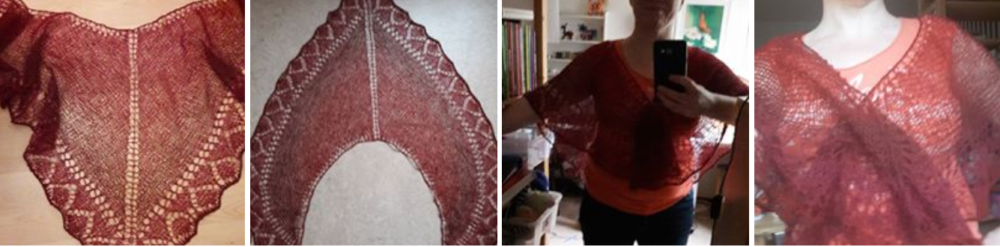

Började med att samla material jag hade till försäljning, men ahr nu blivit samlingsplatsen för bilder på allt jag skapat.
Allt som jag lägger upp på Facebook, vill säga.
Ett rätt bra sätt att skapa en kontaktväg när jag inte riktigt vill displaya min privata profil.
Genom AMAM-sidan har jag också kunnat "göra reklam" för t ex stickprojekt och möjligheten att ta beställningar.
T ex ligger det ju bilder på den sjal som min klasskamrat blev stolt ägare av!

Hela galleriet med stickade alster, som inte på något sätt är komplett, ligger
här.
Välkommen in!